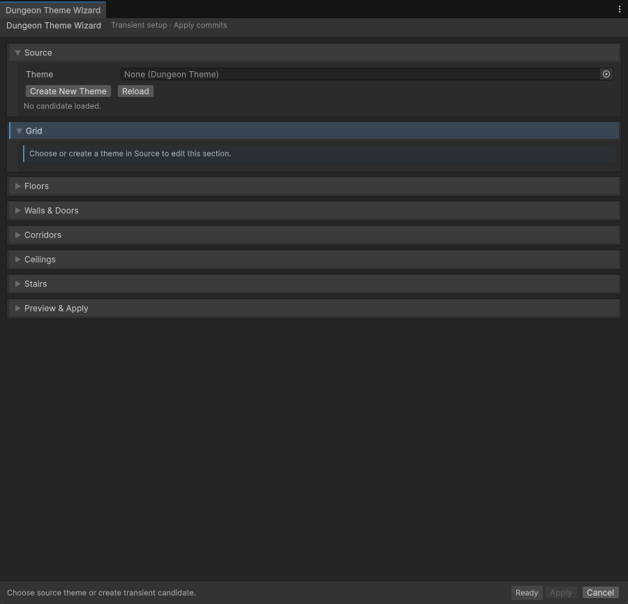

Guide
Decoration and Themes
A theme tells the generator which prefab to use for each part of a room: floors, walls, doors, ceilings, and stairs. A decoration profile fills the room with furniture, props, and clutter by rule, not by hand.
On this page
Themes#
Create a theme with in your content folder. The theme maps each tile type to a prefab family. A family can be empty: if no ceiling prefabs are set, the renderer creates no ceilings.
tileSizefloat default 1- Size of one grid cell in meters. Match it to your modules. Rooms saved from the theme copy this value.
floorHeightfloat default 3- Height of one floor in meters.
wallThicknessfloat default 0.25- Wall thickness in meters.
doubleSidedWallsbool default off- The wall kit looks right from both sides. Rooms saved from the theme can then share walls at seams. See Wall mode.
doubleSidedCeilingsbool default off- The floor slab above is also the ceiling. Keep the ceiling prefab list empty when you turn this on.
pivotCorner or Center default Center- Where the pivot of each module sits in its cell.
- Prefab families
floorPrefabs,wallPrefabs,doorPrefabs,corridorFloorPrefabs,corridorWallPrefabs,holePrefabs,ceilingPrefabs, andstairPrefabs. Each entry sets the prefab, its size in cells, an offset, a rotation, and whether it may rotate.stairProfileStairProfile- The stair shape: its assembly mode, its length, back length, and width, and the pieces that make up the stair.
Dungeon Theme Wizard#
The wizard measures your prefabs and proposes sizes and offsets. Open .
-
Pick a theme in Source, or click Create New Theme. Click Reload to reread the theme from disk.
-
In Grid, click Detect Tile Size From Floors and, if the stairs need it, Detect Floor Height From Walls. Turn on Double-Sided Walls if your kit needs it.
-
Click Analyze All. Each row then shows a proposal. Apply only the proposals that match your kit with Use Proposal.
-
Check the Floors, Walls & Doors, Corridors, Ceilings, and Stairs cards for each family.

Select or create a theme first. Every later step works on that theme. -
Open Preview & Apply and check the seams in the preview. Click Apply to save the changes to the theme, or Cancel to discard them. Until you apply, the wizard only edits a temporary copy.
A wall or door offset that looks small can leave a visible gap between two rooms. Always check the preview after you change an offset.
Decoration profiles#
A DecorationProfile is an ordered list of categories. Create one with . Each category places one kind of object:
priority0–100 default 50- Higher priority is placed first. Relations between categories can change the order.
poollist- The prefabs to pick from. Each entry has a
weight(default 1), an optionalmaxUses(0 means unlimited), and optional overrides for position, rotation, scale, footprint, padding, and orientation. amountModeFixed, Range, or Density default Range- How many objects to place: exactly
minCount, a random count betweenminCountandmaxCount(default 1 to 3), or a density per square meter. surfaceFloor, Wall, or Ceiling default Floor- Where objects go. Wall and ceiling objects are mounted automatically.
regionAnywhere, Edge, Interior, Corner, or Center default Anywhere- Which part of the room to use.
InteriorkeepsinteriorWallCells(default 2) cells away from walls. wallRegionAnyWall, StraightWall, NearCorner, AwayFromCorner, NearDoor, or AwayFromDoor default AnyWall- For wall objects: which part of the wall to use.
occupancySolid, GroundOverlay, WallMounted, CeilingMounted, or NonBlocking default Solid- Solid objects block paths and collide with other decoration. Non-blocking objects, such as rugs, can overlap.
orientationOrientationMode default Random- How objects turn: random, cardinal (0, 90, 180, 270 degrees), fixed, aligned to the surface, or facing the nearest wall, the room center, or another category.
distributionNatural, Even, or Clustered default Natural- How objects spread across the candidate cells.
floorScopeAll, Specific, Range, Bottom, or Top default All- Which floors of a multi-floor room receive the category.
preservePathsbool default on- Keeps paths between doors open.
minimumPathWidth(default 1 m) sets the width that must stay clear. fitModeFixed or AutoFit default FixedAutoFitmoves the object so its back touches the wall, ceiling, or nearest wall, leavingfitMargin(default 0.02 m), and corrects by at mostfitMaxCorrection(default 1 m).relationslist- Rules between categories:
Avoid,PreferNear, orRequireNear, with a distance in meters (default 1). sameCategoryCellGap,doorDistanceCells,stairDistanceCellsint default 1 each- Minimum gap in cells between objects of this category, and between objects and doors or stairs.
footprintPaddingfloat default 0.1- Extra space in meters kept around each object's footprint.
failurePolicyAllowPartial, RequireMinimum, or RequireExact default AllowPartial- What happens when the target count cannot be reached.
AllowPartialkeeps the objects that fit.RequireMinimumremoves the whole category from the room when fewer thanminCountfit.RequireExactremoves it unless exactly the target count fits. enabledbool default on- Turns the category off without deleting it.
Decoration is deterministic. The same seed gives the same result. Each category has its own seed offset, so you can reroll one category without changing the others.
Objects mode#
Switch the Room Designer to Objects to edit the profile for the current room.
- Profile selects the profile. Seed & Randomness sets the seed (default 12345); tick Random for a new seed each time.
- Rebake All Footprints measures each object's footprint again. Save Prefab does this for you, but it helps when you change an object.
- Spawn All, Respawn All, and Despawn All place, redo, and remove the decoration in the scene view. The canvas toolbar has the same actions as Spawn, Respawn, and Despawn.
- + Add, Duplicate, and Delete manage categories.
- Left-click a cell to add a manual pin, which places an object on that cell first. Right-click a pin to remove it. Pins are stored in the profile, so every room that uses the profile gets them.
- Bake Decor decides how Save Prefab handles the furniture. See Save a room prefab.
Decoration at runtime#
A room prefab with a RoomDecorationAuthoring component can be decorated at runtime. Save Prefab adds this component. It stores the room geometry, the profile, and the seed.
When DungeonManager.decorateAfterGeneration is on (the default), the manager decorates each generated room that has the component. The same solver runs in the editor preview and at runtime, so the result you see while editing is the result in play mode.
- To rebuild the decoration of one category at runtime, call
RerollCategoryon the room'sRoomDecorationAuthoring. Each call picks a new result for that category. - If Bake Decor was on when the prefab was saved, the furniture is already in the prefab, and the runtime skips the room.
A profile with errors stops Save Prefab and shows the list. Typical errors are an empty pool, a pool entry with weight 0, a relation to a category that no longer exists, a minimum above the maximum count, and an object whose footprint is not baked. For footprints, click Rebake All Footprints, then save again.
Common mistakes#
- Decoration does not appear. Check that the room prefab has
RoomDecorationAuthoringand thatdecorateAfterGenerationis on. Then check the category's failure policy, becauseRequireMinimumandRequireExactdrop the category when its count is not reached. - Pins appear in every room. Pins belong to the profile. Use a separate profile for rooms that need different pins.
- Doors blocked by furniture. Keep
preservePathson, and raiseminimumPathWidthif the paths are still too narrow.